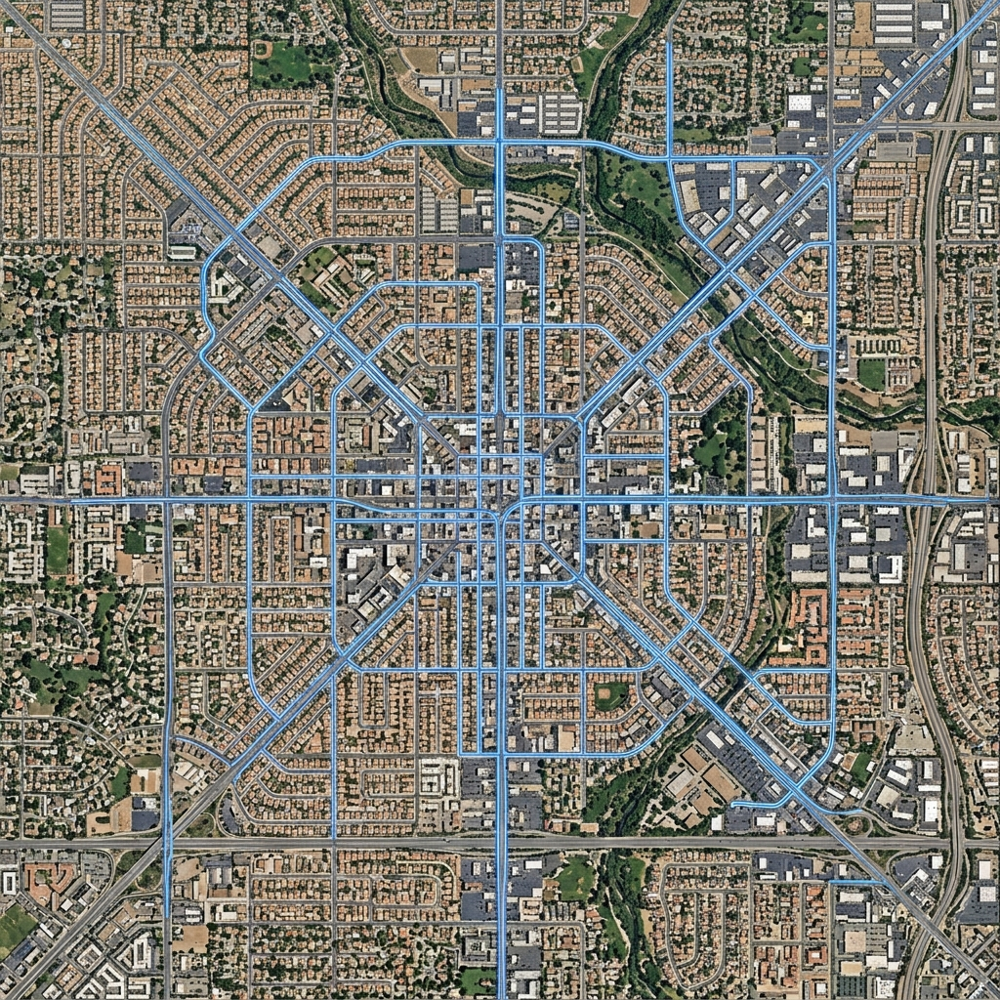
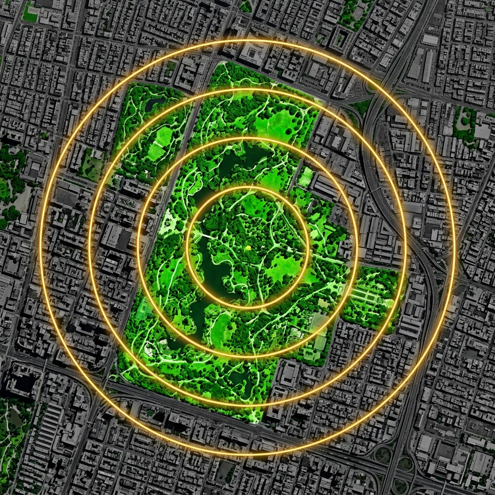
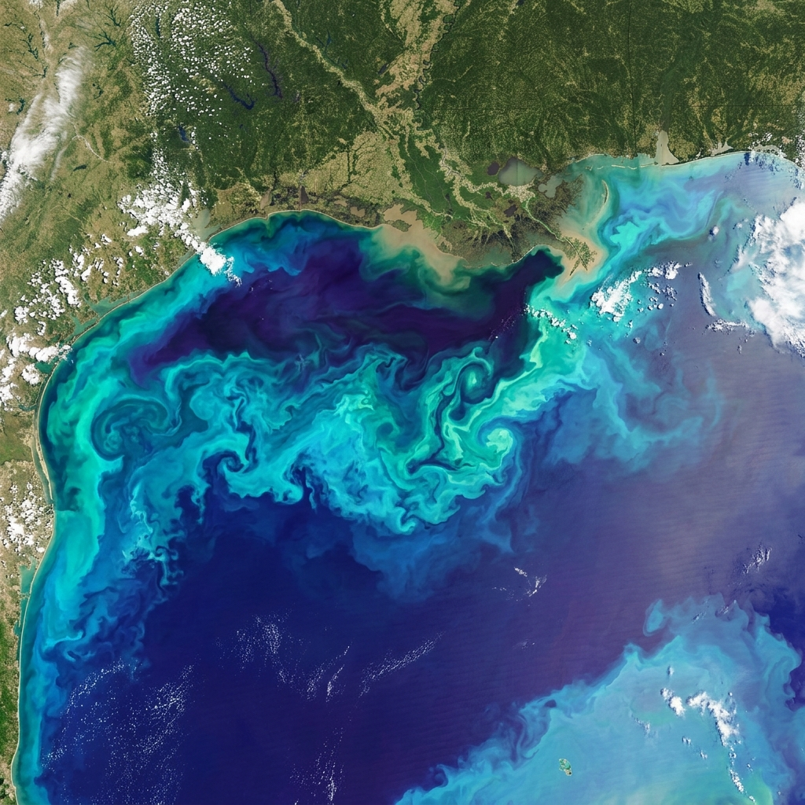

About Me
I am a graduate student in Geographic Information Systems (GIS) at the University of Maryland Baltimore County, with a research focus on Earth observation, remote sensing, and geospatial analysis. My work centers on using satellite imagery, spatial data, and reproducible workflows to study environmental and socio-environmental processes.
I am particularly interested in applying computational methods, Geospatial AI, and programming automation to analyze large geospatial datasets and support research in environmental monitoring and urban planning.
Technical Skills
Programming & Data Analysis
GIS & Remote Sensing Tools
Database & Management
Experience
GIS Fellow
June 2025 – PresentAGU's Thriving Earth Exchange Cohort • Baltimore Green Justice Workers Cooperative
- Coordinate GIS analysis and mapping for 12 Baltimore-based climate organizations focused on climate and environmental programs.
- Create StoryMaps, infographics, and data visualizations, and deliver GIS workshops to build community capacity.
- Perform geospatial and remote sensing analysis to produce datasets and visualizations supporting grant proposals and stakeholder engagement.
Graduate Research Assistant – Geospatial AI & LLM
Sept 2025 – PresentUniversity of Maryland Baltimore County • Baltimore, USA
- Developing a workshop on Geospatial Analysis with Generative AI, integrating LLM-based tools with R, Quarto, and GIS workflows.
- Organizing workshops on text and image analysis using Generative AI for qualitative social science research.
Graduate Research Assistant – Housing & Policing
Nov 2024 – PresentUniversity of Maryland Baltimore County • Baltimore, USA
- Conducting GIS-based research using ESRI ArcGIS and NVivo to generate spatial insights and thematic analysis on urban housing interfaces.
- Contributing to a research paper on the intersection of urban housing and policing.
GIS Mapping & Data Intern
Feb 2025 – May 2025American Dog Society • New York, NY
- Extracted, cleaned, and analyzed geospatial data on pet facilities using Python to construct neighborhood-level metrics.
- Developed interactive web maps via JavaScript, HTML, and ArcGIS Online.
GIS Senior Process Executive
Apr 2022 – Aug 2024Infosys • Hyderabad, India
- Developed Python-based automation tools with documented workflows, reducing manual GIS processing by 40%.
- Led QA/QC analysis on Apple Maps’ POI data, improving navigation accuracy. (Awarded I-Star Incentive 2023)
GIS Intern
Jun 2021 – Aug 2021Dronah • Jaipur, India
- Automated GIS map generation for the Jaipur World Heritage City Tourism Plan using Python.
Planning Intern
Feb 2021 – May 2021All India Institute of Local Self Governance • Hyderabad, India
- Prepared Detailed Project Reports focusing on Sustainability and Waste Management for Gram Panchayats.
GIS Data Analyst
Aug 2020 – Feb 2021Pure Earth Foundation • Hyderabad, India
- Conducted on-site GPS surveys for forest land claims and mapped specific claimant polygons via ArcGIS/QGIS and LiDAR processing.
- Led a team of 20 surveyors in GPS data collection, improving field accuracy by 25%.
Projects
Baltimore Climate Vulnerability Index
ArcGIS Online • Leaflet.js • JavaScript • FEMA NFHL • NLCD • HTML/CSS
- Built a weighted composite index scoring every Baltimore census tract 0–100 across four indicators: Heat Severity (30%), Flood Exposure (25%), Canopy Deficit (25%), and Socio-Economic Sensitivity (20%).
- Processed raster and vector data in ArcGIS Online using Zonal Statistics, Overlay, Summarize Within, and Min-Max Normalization across all inputs.
- Developed for a GeoAI workshop — includes an interactive Leaflet map and an ArcGIS StoryMap presenting the full methodology and findings.

Transit Accessibility of New Residential Development
R • Quarto • PostgreSQL/PostGIS • Montgomery County
- Built reproducible ETL pipelines integrating parcel, boundary, and transit datasets into a PostGIS database.
- Designed a normalized schema with spatial SQL queries to evaluate transit accessibility for 6,300+ new parcels.
- Produced tract-level analyses to support equity-focused regional planning.

Green Space Accessibility and Demographics Analysis
R • OpenRouteService • ggplot2 • Leaflet • Baltimore
- Conducted isochrone analysis using APIs for geospatial evaluation of park accessibility.
- Analyzed walkability and demographics to identify park access disparities.
- Created interactive Leaflet maps integrating ArcGIS to visualize underserved areas.

Gulf Hypoxia Zones Assessment
Python • Jupyter Notebooks • PACE Satellite Data
- Explored linkages between PACE ocean color and bottom-water hypoxia in the Gulf of Mexico (FISH-PACE Hackweek 2026).
- Collated and analyzed in-situ dissolved oxygen (DO) datasets with PACE satellite imagery to understand biogeochemical relationships.
Education & Credentials
Academics & Certifications
Masters in Geographical Information Systems (GIS)
May 2026University of Maryland Baltimore County • GPA 3.82
Focus: Spatial Dataset Dev, Remote Sensing Apps, Satellite Image Analysis, Critical & Ethical Mapping.
Bachelor of Technology in Urban & Regional Planning
May 2020Jawaharlal Nehru Architecture and Fine Arts University • India
Focus: Remote Sensing, AutoCAD, Spatial Data Analysis, Surveying, Photogrammetry.
Certifications
- NASA ARSET: Hyperspectral Data for Land Cover Applications
- C.E.D.: Advanced Certificate in Geoinformatics
- QGIS Training: Central University of Karnataka
- Brandefense Academy: OSINT — Visual Intelligence (VISINT) & Geospatial Intelligence (GEOINT) Apr 2026
Professional Footprint & Leadership
Conferences & Workshops
Leadership & Affiliations
- Vice President - ASPRS (UMBC Student Chapter)
- Student Member - Maryland Society of Surveyors & American Planning Association
MTIP Grant Recipient: Supporting GIS fellowship at BGJWC.
I-Star Incentive Award (2023): Outstanding contributions at Infosys.